금속재료시험기능사 (2016-01-24 기출문제)
1과목: 금속재료일반
1. 내열성과 내식성이 요구되는 석유 화학 장치, 약품 및 식품 공업용 장치에 사용하는 Ni-Cr 합금은?
- 인바
- 엘린바
- 인코넬
- 플래티나이트
(정답률: 73%)

2. 저융점 합금으로 사용되는 금속 원소가 아닌 것은?
- Pb
- Bi
- Sn
- Mo
(정답률: 63%)
3. 금속의 부식에 대한 설명 중 옳은 것은?
- 공기 증 염분은 부식을 억제시킨다.
- 황와수조, 염산은 부식과는 관계가 없다.
- 이온화 경향이 작을수록 부식이 쉽게 된다.
- 습기가 많은 대기 중일수록 부식되기 쉽다.
(정답률: 85%)
4. 냉간가공과 열간을 구별하는 기중이 되는 것은?
- 변태점
- 탄성한도
- 재결정온도
- 마무리온도
(정답률: 84%)
5. Fe-C평형상태도에 대한 설명으로 옳은 것은?
- 공정점의 탄소량은 약 0.80%이다.
- 포정점의 온도는 약 1490℃ 이다.
- Ao 를 철의 자기변태점이라 한다.
- 공석점에서는 레데뷰라이트가 석출한다.
(정답률: 62%)
6. 형상기억합금의 대표적인 실용합금 성분으로 옳은 것은?
- Fe-C합금
- Ni-Ti합금
- Cu-Pd합금
- Pb-Sb합금
(정답률: 79%)
7. 독성이 없어 의약품, 식품 등의 포장형 튜브제조에 많이 사용되는 금속으로 탈색효과가 우수하면, 비중이 약 7.3 인 금속은?
- Sn
- Zn
- Mn
- Pt
(정답률: 60%)
8. 절삭 공구강의 일종으로 500~600℃까지 가열 하여도 뜨임에 의해서 연화되지 않고, 또 고온에서도 경도 감소가 적은 것은 특징으로 기본 성분은 18%W, 4%Cr 1%V이고, 0.8~1.5%C를 함유하고 있는 강은?
- 고속도강
- 금형용강
- 게이즈용강
- 내 충격용 공구장
(정답률: 78%)
9. 6-4황동에 Sn을 1% 첨가한 것으로 판, 봉으로 가공되어 용접봉, 밸브대 등에 사용되는 것은?
- 톰백
- 금형용강
- 네이벌 황동
- 애드미럴티 황동
(정답률: 71%)
10. Ti 및 Ti 합금에 대한 설명으로 틀린 것은?
- 고온에서 크리프 강도가 낮다.
- Ti 금속은 TiO2로 된 금홍석으로부터 얻는다.
- Ti 합금 제조법에는 크롤법과 헌터법이 있다.
- Ti은 산화성 수용액에서 표면에 안정된 산화티탄의 보호 피막이 생겨 내식성을 가지게 된다.
(정답률: 57%)
11. 흑연을 구상화시키기 위해 선철을 용해하여 주입 전에 첨가하는 것은?
- Cs
- Cr
- Mg
- Na2CO3
(정답률: 63%)
12. 스프링강에 대한 설명으로 틀린 것은?
- 담금질 온도는 1100~1200℃에서 수냉이 적당하다.
- 스프링강은 탄성 한도가 높고 충격 및 피로에 대한 저항이 커야 한다.
- 경도는 HB 340 이상이며, 열처리된 조직은 소르바이트 조직이다.
- 탄소함량에 따라 0.65~0.85%C의 판 스프링과 0.85~1.⑤%C의 코일 스프링으로 나눌 수 있다.
(정답률: 50%)
13. Si이 10~13% 함유된 Al-Si계 합금으로 녹는점이 낮고 유동성이 좋아 크고 복잡한 사형주조에 이용되는 것은?
- 알민
- 알드리
- 실루민
- 알클래드
(정답률: 79%)
14. 암모니아 가스 분해와 질소의 내부 확산을 이용한 표면 경화법은?
- 염욕법
- 질화법
- 염화바륨법
- 고체 침탄법
(정답률: 76%)
15. 두랄루민의 주성분으로 옳은 것은?
- Ni-Cu-P-Mn
- Al-Cu-Mg-Mn
- Mn-Zn-Fe-Mg
- Ca-Si-Mg-Mn
(정답률: 80%)
16. 제작 도면으로 사용할 완성된 도면이 되기 위한 선의 우선 순서로 옳은 것은?
- 외형선→치수선→해칭선→숨은선→중심선→차단선
- 해칭선→외형선→파단선→숨은선→중심선→치수선
- 외형선→숨은선→중심선→파단선→치수선→해칭선
- 중심선→외형선→숨은선→해칭선→파단선→치수선
(정답률: 69%)
17. 기계재료의 표시 중 SF 340 A가 의미하는 것은?
- 탄소강 단강품
- 탄소강 주강품
- 탄소강 압연품
- 탄소강 압출품
(정답률: 57%)
18. 다음 그림은 제3각법에 의해 그린 투상도이다. 평면도에 해당되는 것은?
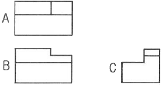
- A
- B
- C
- A와 B
(정답률: 78%)
19. 물체의 표면 일부에 특수처리를 하는 경우에 그 범위를 외형선에 평행하게 약간 띄어 표시하는 선의 종류는?
- 굵은 파선
- 굵은 일점 쇄선
- 가는 이점 쇄선
- 가는 일점 쇄선
(정답률: 58%)
20. 다음 중 공차값이 가장 큰 치수는?
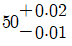
- 50±0.02
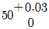
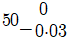
(정답률: 66%)
2과목: 금속제도
21. 다음 중 구멍의 최소 치수가 축의 최대 치수보다 큰 경우로서 미끄럼 운동이나 회전 운동이 필요한 부품에 적용되는 끼워맞춤은?
- 헐거운 끼워맞춤
- 억지 끼워맞춤
- 중간 끼워맞춤
- 가열 끼워맞춤
(정답률: 68%)
22. 지름이 10mm이고, 길이가 20mm인 축을 척도 1;2로 제도 하였다면, 길이는 도면에 얼마를 기입하는가?
- 5mm
- 10mm
- 15mm
- 20mm
(정답률: 41%)
23. 육각볼트와 너트의 그림에서 볼트의 길이는?
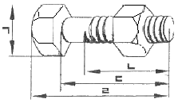
- ㄱ
- ㄴ
- ㄷ
- ㄹ
(정답률: 61%)
24. 도면에서 A부분과 같이 나타내는 것을 무엇이라 하는가?
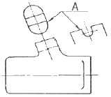
- 확대 투상도
- 부분 투상도
- 회전 투상도
- 전개 투상도
(정답률: 67%)
25. 그림과 같이 물체의 표면에 굵은 일점 쇄선으로 그린 부분이 뜻하는 것은?
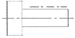
- 그 부분을 특수사공한다.
- 부품을 조립할 때 주의를 요한다.
- 치수 정밀도와 관계없이 가공한다.
- 부식이 되지 않도록 방청유를 급유한다.
(정답률: 69%)
26. 도면에 기입된 C3에서 C의 의미는?
- 45도 모따기
- 정사각형
- 반지름
- 지름
(정답률: 82%)
27. 도면의 표면기호에서 가공방법을 나타내는 기호로 "FL"이 기입되어 있다면 어떤 가공을 의미하는가?
- 브러싱 가공
- 리밍 가공
- 줄 다듬질
- 래핑 가공
(정답률: 65%)
28. 마이크로 비커즈 경도시험의 주의사항 중 틀린 것은?
- 경도기는 사용 중 진동이 없도록 해야 한다.
- 경도기는 항상 수평 상태에서 사용해야 한다.
- 시험편은 거칠은 상태로 측정해야 측정값이 정확하다.
- 하중 선정시에는 하중 스위치를 조심스럽게 돌린다.
(정답률: 73%)
29. 고분해능을 얻기 위한 전자현미경(SFM)의 작업 조건을 설명 한 것 중 틀린 것은?
- 짧은 작동거리로 전자빔 크기를 최대화한다.
- 비점수차 보정은 가급적 고배율에서 수행한다.
- 진동을 차단하기 위해 시료를 단단히 고정 시킨다.
- 접속렌즈의 강한 여기로 전자빔 크기를 최소화한다.
(정답률: 37%)
30. 조미니시험으로 알 수 있는 것은?
- 입도결과측정
- 담금질성 측정
- 경도결과측정
- 조직판별시험
(정답률: 63%)
31. 시험체의 내부와 외부에 압력 차이를 주었을 때, 시험체 주위의 액체나 기체와 같은 유체가 시험체의 결함을 통하여 흘러나오거나 흘러들어가는 성질을 이용하는 비파괴 검사법은?
- RT
- PT
- ET
- LT
(정답률: 45%)
32. 다음 중 피로 한도비란?
- 피로에 의한 균열값
- 피로한도를 인장강도로 나눈값
- 재료의 하중치를 충격값으로 나눈 값
- 피로파괴가 일어나기까지의 응력 반복 횟수
(정답률: 58%)
33. 굽힘시험에 사용되는 [그림]과 같은 V블록의 테이퍼진 면들이 이루어야 하는 각도로 옳은 것은?
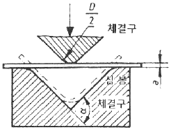
- (90-α)°
- (180-α)°
- (270-α)°
- (360-α)°
(정답률: 60%)
34. 강의 페라이트 결정입도 시험 결과가 [보기]와 같을 때 설명이 틀린 것은?
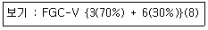
- 평적법에 해당된다.
- 지각 단면에서 8 시야 전부가 혼립한다.
- 종합 판정에 의하여 입도 3이 70%이다.
- 종합 판정에 의하여 입도 6이 30%이다.
(정답률: 53%)
35. 압흔 흔적을 남기지 않고 휴대하면서 현장에서 간편하게 경도 측정을 할 수 있는 시험기가 쇼어 경도계이다. 이 경도계 중에서 해머의 낙하 거리를 254mm로 요구하는 목측형 경도계의 유형에 해당하는 것은?
- A형
- B형
- C형
- D형
(정답률: 40%)
36. 시험 중에 분진이 발생할 염려가 있어 방진대책을 세울 필요가 있는 시험은?
- 인장시험
- 경도시험
- 초음파탐상시험
- 자분(건식)탐상시험
(정답률: 69%)
37. 방사선투과검사시 방사선에 의한 해를 입지 않도록 시험실 주변의 방사선량을 수시로 측정할 때 쓰이는 것은?
- 계조계
- 타코미터
- 투과도계
- 서베이미터
(정답률: 55%)
38. 초음파탐상검사에 대한 설명 중 틀린 것은?
- 전파 능력이 우수하다.
- 검사결과를 신속히 알 수 있다.
- 균열 등 미세한 결함에 대하여 감도가 높다.
- 표준 시험편 또는 대비 시험편이 필요하지 않다.
(정답률: 63%)
39. 전단응력과 전단 변형률을 구하여 강도를 계산할 수 있는 시험법은?
- 휨 시험
- 굽힘 시험
- 에릭센 시험
- 비틀림 시험
(정답률: 41%)
40. 시험편의 크기가 작거나 두께가 얇을 경우 연마하기 쉽도록 열경화성 수지로 매립하는 작업은?
- 에칭
- 마운팅
- 폴리싱
- 어닐링
(정답률: 50%)
3과목: 금속재료조직 및 비파괴시험
41. 축 하중 피로 시험기에 적합한 교정 막대기에 대한 설명으로 틀린 것은? (단, Lc:시험편의 평행길이, d:응력이 최대인 경우에 시험편의 지름, 1:게이지지지 재료의 길이, D:시험편의 고정된 단부의 지름, r:평행 길이로부터 고정된 단부까지의 변화 길이 이다.)
- Lc는 적어도 d+1 이어야 한다.
- r은 D와 가급적 동일한 것이 좋다.
- Lc는 d+2D 이하 이어야 한다.
- r 및 D는 2d와 동일하거나 2d보다 큰 것이 좋다.
(정답률: 44%)
42. 금속조직 내에서 상의 양을 측정하는 방법이 아닌 것은?
- 점의 측정법
- 면적의 측정법
- 부피의 측정법
- 직선의 측정법
(정답률: 46%)
43. 설퍼프린트 시험에서 점상편석을 나타내는 기호로 옳은 것은?
- SN
- SD
- SL
- SC
(정답률: 46%)
44. 충격시험에서 V노치 시험편의 V노치 각도 규격으로 옳은 것은?
- 30°±2°
- 45°±2°
- 55°±5°
- 75°±5°
(정답률: 51%)
45. 정량조직검사에서 평균입도번호(m)를 구하는 식으로 옳은 것은? (단, a:각 시야에서의 입도 번호, d:동일 입도번호를 표시하는 시야수이다.)
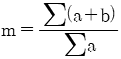
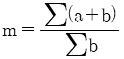
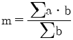
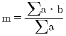
(정답률: 36%)
46. 응력 측정이나 시험방법이 아닌 것은?
- 섬프법
- 무아레법
- 광탄성 방법
- 브리틀 코팅 방법
(정답률: 35%)
47. 다음 중 압축시험할 때 사용하는 기계 및 기구가 아닌 것은?
- 직각게이지
- 굽힘시험대
- 크리프시험기
- 만능 재료시험기
(정답률: 47%)
48. 피로의 증상을 생리적 및 심리적 현상으로 구분할 때 심리적 현상에 해당되는 것은?
- 주의력이 감소 또는 경감된다.
- 작업효과나 작업량이 감퇴하거나 저하된다.
- 작업에 대한 몸 자세가 흐트러지고 지치게 된다.
- 작업에 대한 무감각, 무표정, 경련 등이 일어난다.
(정답률: 53%)
49. 와전류 탐상시험의 기본원리는 어떤 현상을 이용한 것인가?
- 전자유도
- 속도효과
- 압력차이
- 경도결과
(정답률: 70%)
50. 강재 중의 황의 편석 및 그 분포 상태를 조사하는 시험은?
- 마멸 시험
- 커핑 시험
- 에릭션 시험
- 설퍼 프린트 시험
(정답률: 57%)
51. 크리프(creep)에 관한 다음의 설명 중 옳은 것은?
- 정상 크리프 단계에서는 변형률이 점차 감소한다.
- 어떤 재료에 크리프가 생기는 용인은 하중과 시간뿐이다.
- 철강 및 경합금 등은 450℃ 이상의 온도가 되어야 크리프 현상이 일어난다.
- 일정 온도에서 어떤 시간 후에 크리프 속도가 0이 되는 응력을 크리프 한도라 한다.
(정답률: 56%)
52. 초음파 탐상기에서 음압의 비, 에코 높이의 비 등을 표시하는 단위는?
- 데시벨(dB)
- 피피엠(PPM)
- 알피엠(RPM)
- 고전압 전류(HVA)
(정답률: 62%)
53. 자분탐상검사의 시험 절차로 옳은 것은?
- 자화→전처리→관찰→자분의 적용→기록→후처리
- 전처리→자화→자분의 적용→기록→후처리→관찰
- 전처리→자화→자분의 적용→관찰→기록→후처리
- 전처리→자분의 적용→관찰→자화→기록→후처리
(정답률: 67%)
54. 비커스 경도 시험에서 압입자의 설명으로 옳은 것은?
- 5mm 지름의 강구이다.
- 90° 꼭지각의 다이아몬드 압입자이다.
- 120° 대면각의 다이아몬드 압입자이다.
- 136° 대면각의 다이아몬드 압입자이다.
(정답률: 58%)
55. 굽힘 시험에서 최대 응력을 나타내는 식은? (단, P:빔의 중점에서 작용하는 집중 하중, L:지지점 간의 거리, Z:단면계수이다.)
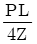
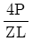
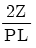
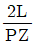
(정답률: 35%)
56. 로크웰 경도 시험기의 눈금판에는 흑색으로 0~100까지의 눈금이 있고, 적색으로 30~~130까지의 눈금이 있다. 흑색의 눈금을 읽어야 하는 스케일은?
- B 스케일
- C 스케일
- F 스케일
- 화학적 스케일
(정답률: 45%)
57. 침투탐상검사의 시험 원리로 옳은 것은?
- 음향 현상
- 전기적 현상
- 모세관 현상
- 화학적 현상
(정답률: 64%)
58. 응력-변형 곡선 중 Z점에서 계산할 수 있는 것은?
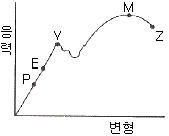
- 인장 강도
- 파괴 강도
- 항복 강도
- 안전 강도
(정답률: 56%)
59. 탄소강을 불꽃시험 할 때 탄소함유량에 따른 불꽃의 설명이 틀린 것은?
- 탄소량이 증가함에 따라 색은 적색을 띤다.
- 탄소량이 증가함에 따라 길이는 짧아진다.
- 탄소량이 증가함에 따라 파열이 많아진다.
- 탄소량이 증가함에 따라 불꽃의 양이 적어진다.
(정답률: 56%)
60. 검사 부위를 육안으로 관찰하든가 10배 이하의 확대경으로 검사하는 검사법은?
- 매크로 시험법
- 현미경 시험법
- X-선 검사법
- 화염불꽃 시험법
(정답률: 57%)